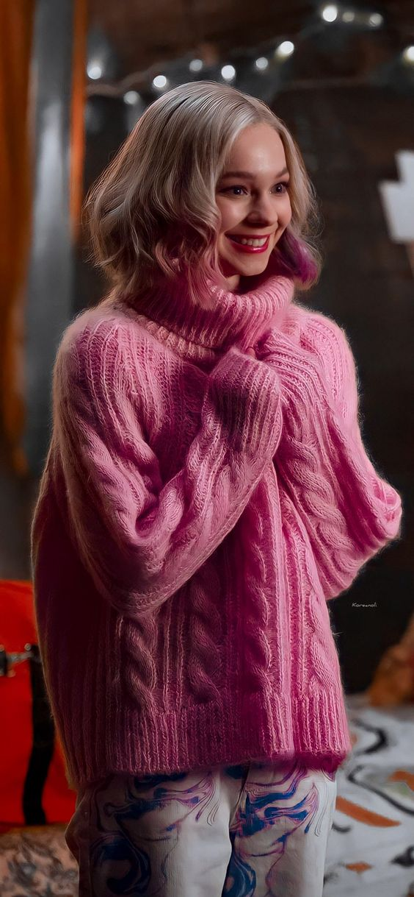

ESFP
Enid is exceptionally observant of her environment and she is able to notice subtle changes in social situations. Enid makes decisions based on her personal values and is passionate about certain causes. When communicating, she is warm and accepting.
Enid Sinclair once said...“Who doesn’t have a spooky built-in altar in their family library?”